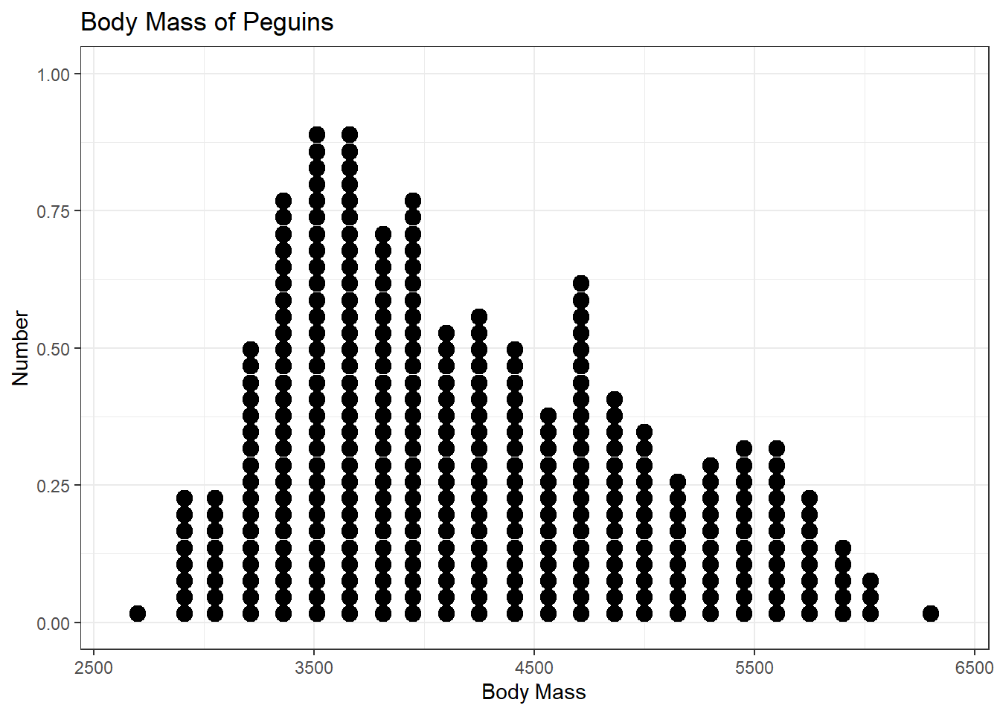
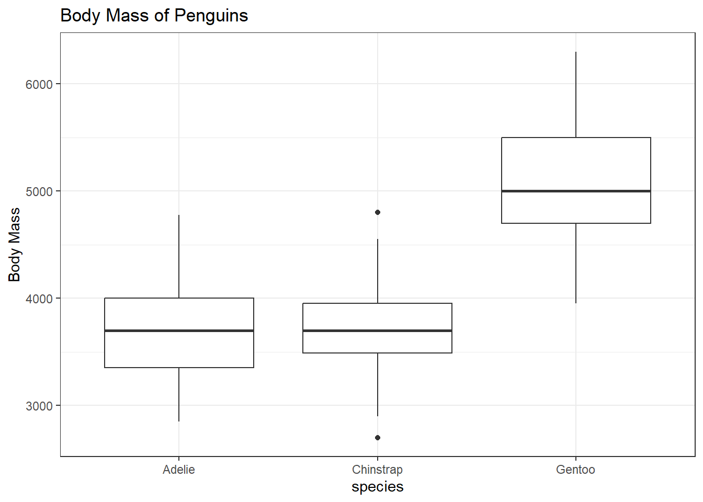
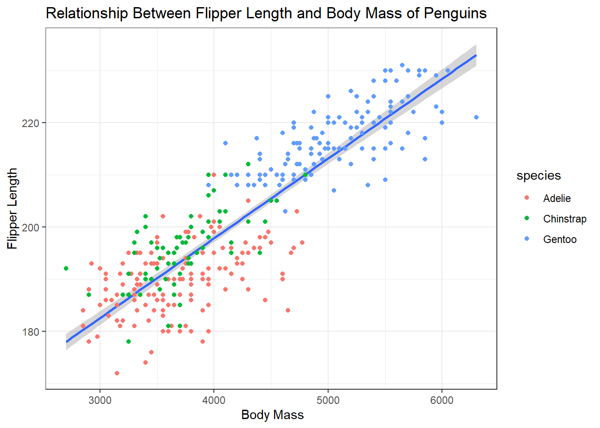
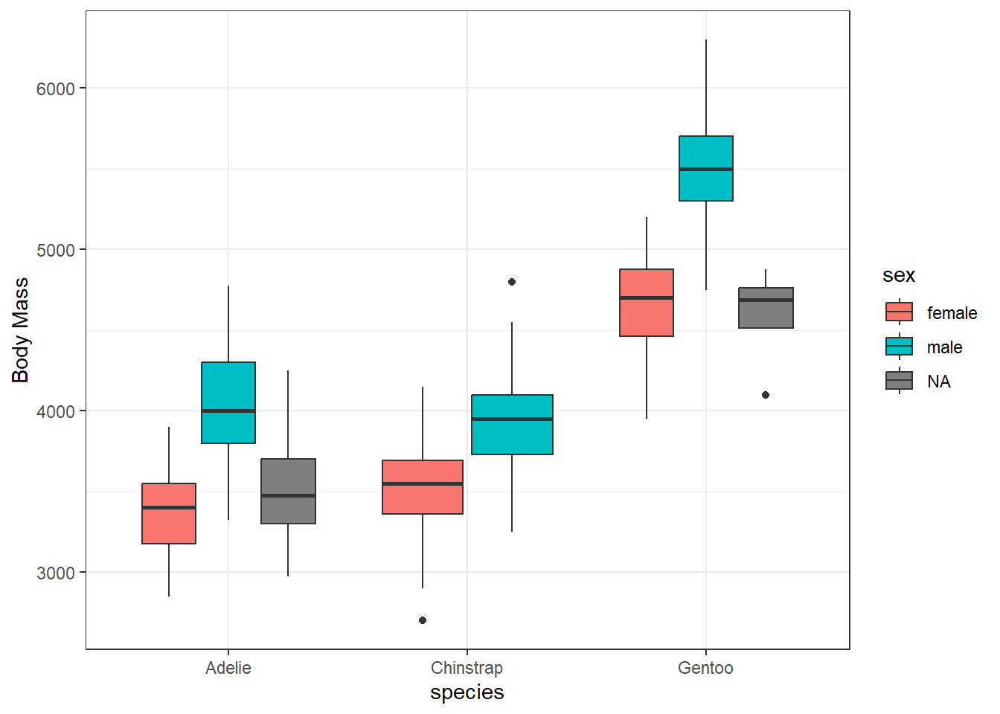
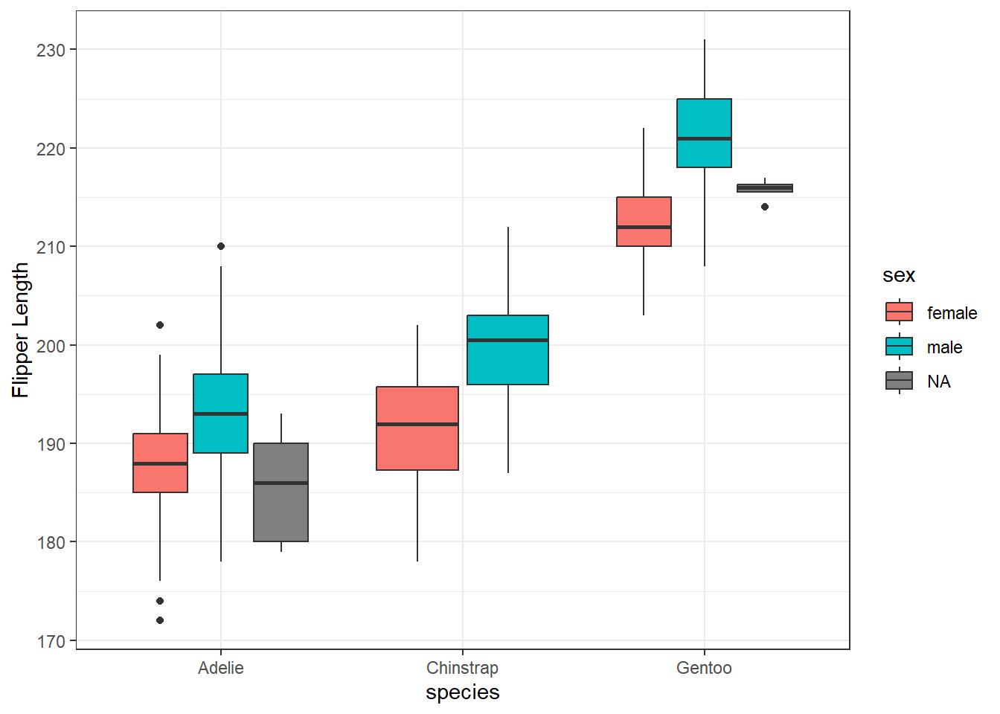

Penguins
Emily
2024-09-13
Data
These data are from palmerspenguins dataset. Data were collected and made available by Dr. Kristen Gorman and the Palmer Station, Antarctica LTER, a member of the Long Term Ecological Research Network.
This package contains two datasets, with 344 penguins. One is called ‘penguins’ and is a simplified version of the second dataset, wich is called ‘penguins_raw’. ‘penguins_raw’ contains all the original data and variables.
Single trait distribution
I am investigating the differences in body mass of these penguins.
Below is a dotplot showing the range of body mass of all penguins surveyed.

Here, I investigated the relationship between species and body mass of penguins. I found that Adelie and Chinstrap penguins have similar body masses, whereas Gentoo penguins generally are larger.

Relationship between multiple traits
Now, I want to understand the relationship between body mass and flipper length.
Below, I plotted the relationship between body mass and flipper length. It shows that as body mass increases, flipper length also increases.

Sexual dimorphism
Here, I explored how male and female penguins differ in body mass and flipper length.
From the data plotted below, female penguins from all three species tend to be smaller than male penguins from the same species.

From the data below, female penguins from all three species tend to be have smaller flippers than male penguins from the same species. This could be inferred also because body mass and flipper length was highly correlated in the above scatterplot.
